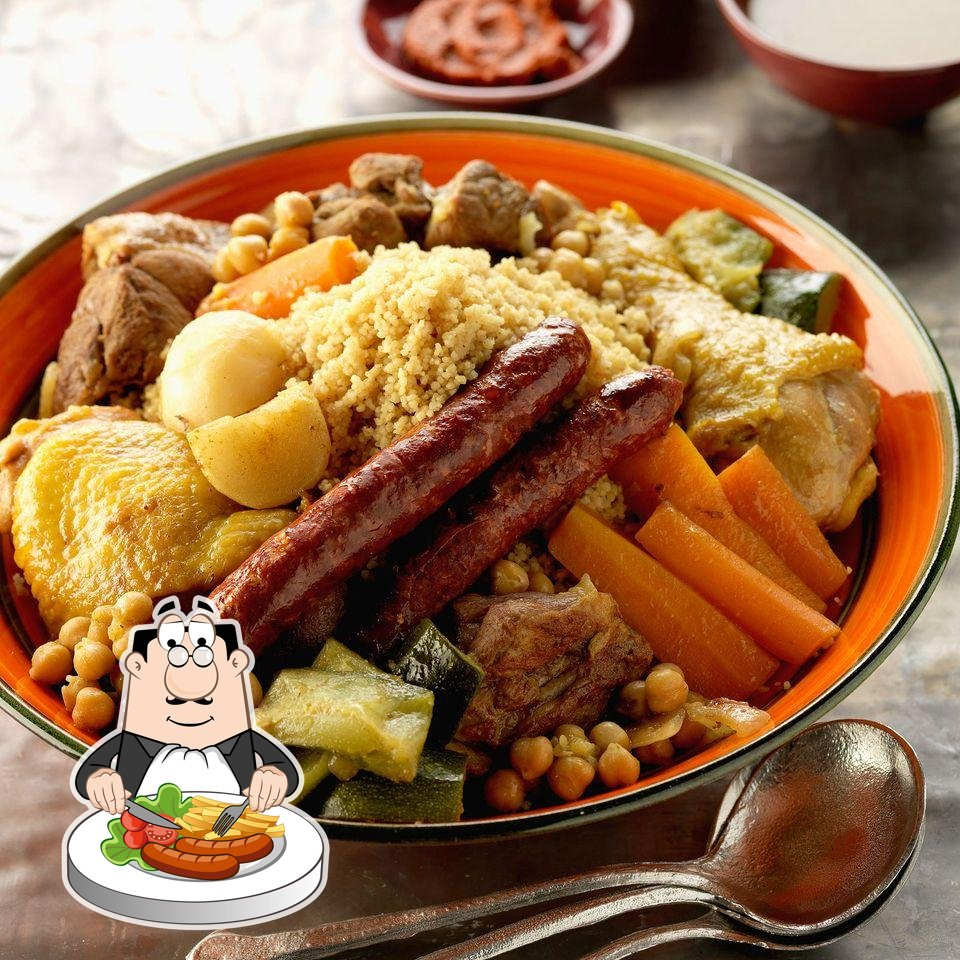
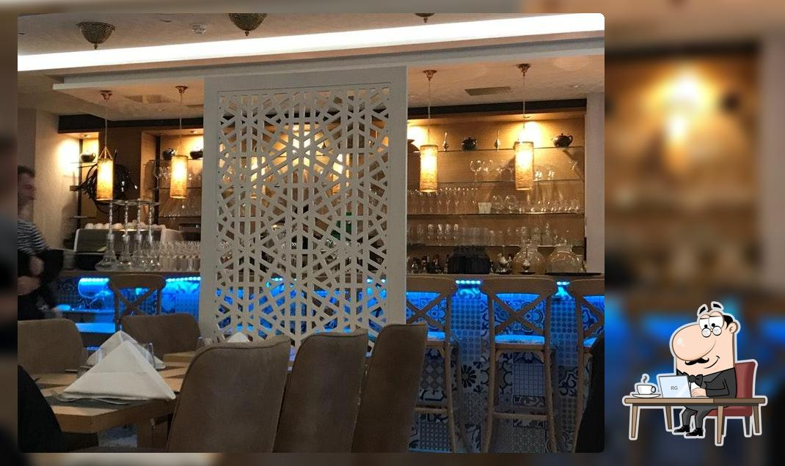

Le plat signature
Couscous au poulpe
Semoule roulée, poulpe fondant et bouillon parfumé aux épices douces — le plat qui a fait la réputation de la maison.
Les saveurs de la Tunisie, au cœur de la Gare — une cuisine relevée mais douce, pensée avec des chefs tunisiens pour retrouver le goût d'antan.

Un couscous qui rendrait ma mère fière.Avis client · TripAdvisor

Couscous, tajines et grillades tunisiennes, entre tradition familiale et esprit bistronomique. Carte indicative.
Un déjeuner d'affaires à l'abri du bruit, un dîner convivial, une échappée sur la terrasse cachée.
Au cœur du quartier de la Gare, le Bistro Carthago sert une cuisine tunisienne moderne et raffinée, restée fidèle à la tradition familiale.
La carte a été développée avec plusieurs chefs tunisiens pour préserver « le goût et les saveurs d'antan » — relevée, mais également douce, pleine de saveurs.
Un coin discret, à l'abri du bruit de la ville, pour déjeuner ou dîner au calme.
Une salle privée pour les déjeuners confidentiels et les rendez-vous professionnels.
Un accueil souriant et chaleureux, salué par les habitués — l'esprit tunisien de l'hospitalité.
À deux pas de la gare de Luxembourg. Réservation par téléphone recommandée.